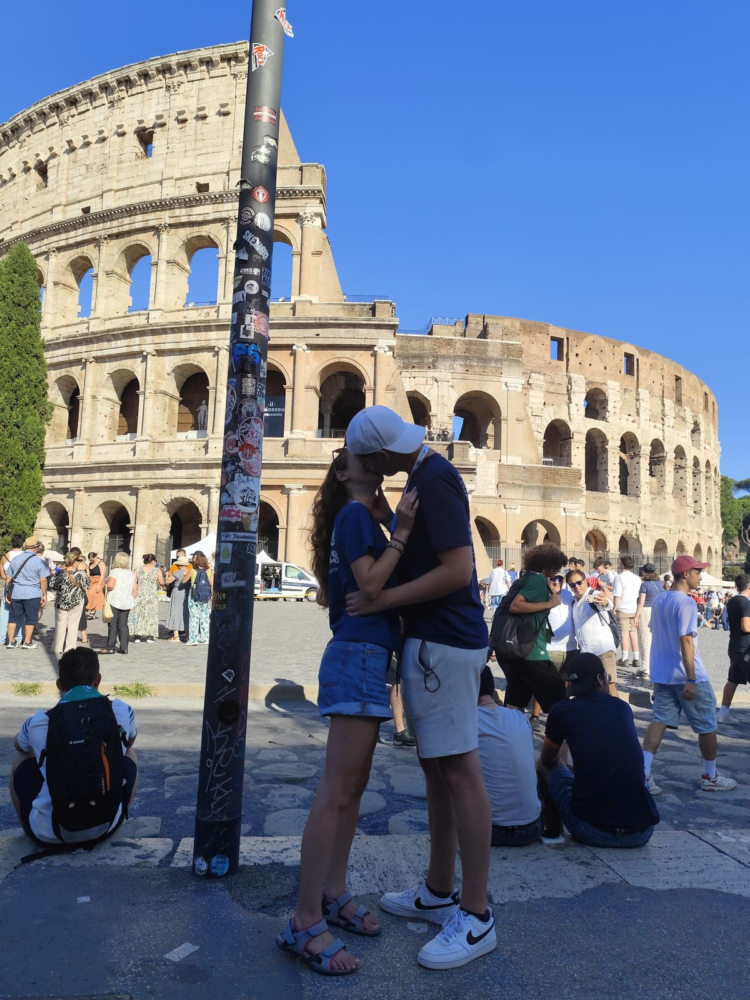
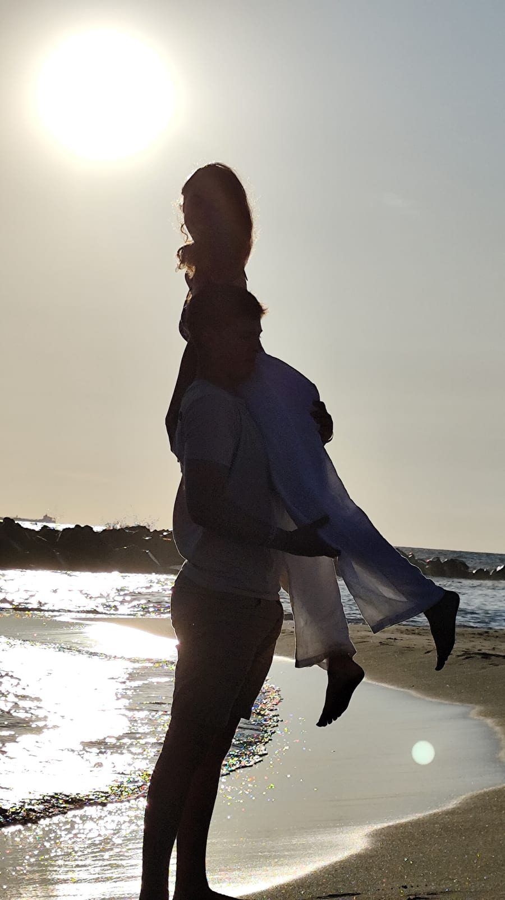
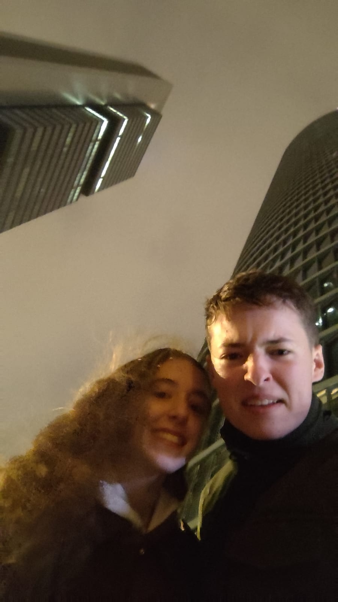
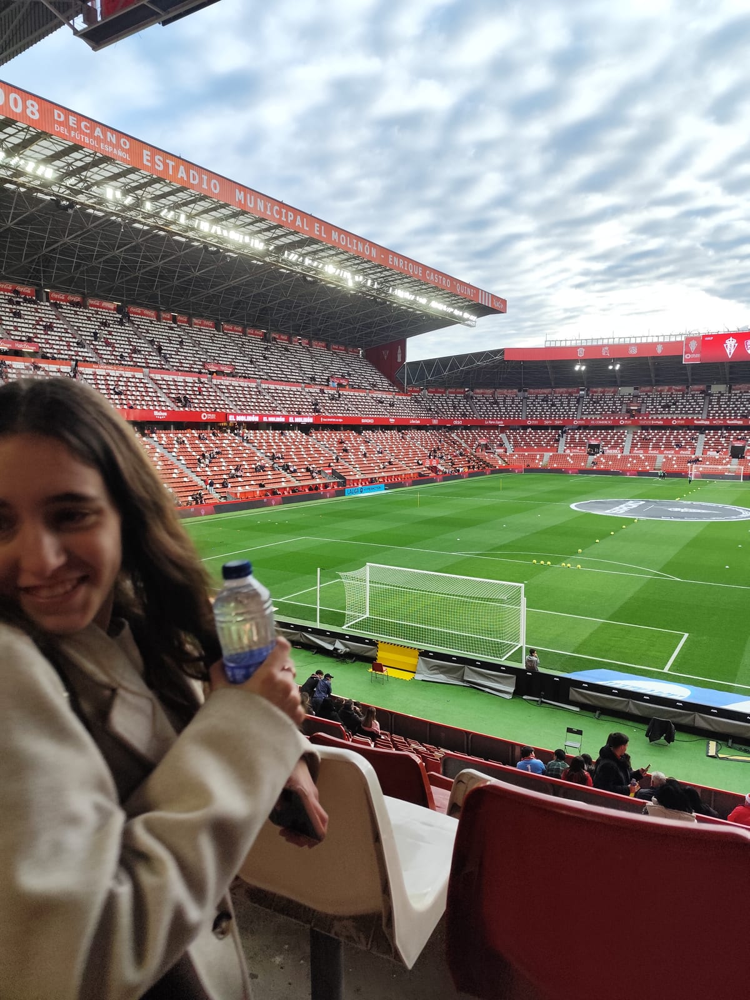

Nuestro segundo año
Más historia, más nosotros, más por venir
Para ti
Mi carta
Lorena, este segundo año ya éramos nosotros: Roma, Dani Martínnn, Madrid (×2), mi pueblo, tu pueblo, las risas y todo lo que hemos sumado juntos.
Aunque hayamos tenido muchos roces, siempre acabamos arreglándolo de una manera u otra, porque sabemos que somos para toda la vida, y sabes que me vuelves puto loco.
Gracias por estar. El capítulo 3 lo escribimos juntos.
Siempre tuyo.
Recuerdos
Fotos del año 2










Hitos
Momentos que marcaron el año
-
23 de julio de 2025
Cumplimos el primer año de novios.
-
29 de julio de 2025
Nos fuimos a Roma (no sabíamos lo que nos esperaba).
-
7 de agosto de 2025
Celebramos los 2 años en el Guinos porque no pudimos hacerlo antes.
-
9 de agosto de 2025
Viniste a mi pueblo por primera vez.
-
19 de agosto de 2025
Fuimos a la playa de Gijón y nos sacamos como mil fotos.
-
1 de septiembre de 2025
Nació el «Que te meto un guantazo».
-
18 de octubre de 2025
Fuimos al Muerde la Pasta y nos sacamos unas fotos en el fotomatón.
-
15 de noviembre de 2025
Vivimos un conciertazo de Dani Martín en Madriddd.
-
8 de febrero de 2026
Viniste por primera vez al mejor estadio del mundo.
-
1 de abril de 2026
Volvimos a MADRIDDDD.
-
Mayo de 2026
Nos apuntamos al mismo GYMMM.
Banda sonora
Nuestra canción del año 2

¿Lista para el año 3?
Estos dos años han sido solo el principio de nuestra historia. Lo que viene lo escribimos juntos, día a día. Te quiero.
Abrir el año 3 →